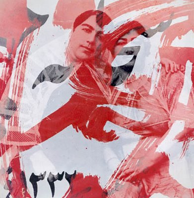

|
|

گفتگو با بهمن جلالي عکاس مستند
بهمن جلالی : موفقیت کمپین به خاطر گستردگی، تنوع محیط و فضایش است
راحله عسگري زاده
پنج شنبه20 تیر 1387
بهمن جلالی (متولد 1323-تهران )عکاس مستند نگاری است که عکس هایش از 60 روز انقلاب و خرمشهرجزو تاثیرگذارترین عکس های تاریخ ایران است . بهمن جلالی فارغالتحصیل رشتهی علوم سیاسی و اقتصاد دانشگاه ملی (شهید بهشتی امروز) است و عكاسی را بهشكل تجربی آموخته است.
وی مدت كوتاهی پس از پایان جنگ ایران و عراق با آژانس خبری سیپا همكاری كرد، ولی خیلی زود بهخاطر آنچه خود او علاقه به عكاسی مستند مینامد این همكاری را قطع كرد.
جلالی همواره علاقه داشته است كار خود را به سبك عكاسی آماتور نزدیك كرده و از سبكها و قواعد عكاسی حرفهیی دوری كند.
او نخستین نمایشگاه عكسش را ۳۶ سال پیش در تالار قندریز برپا كرد. وتا امروز بیش از 50 نمایشگاه در سراسر جهان برگزار کرده است. حدود دو سال پیش هم ۱۲۵ اسلاید و عكسهایش را از اشغال خرمشهر و هشت سال جنگ در برلین بهنمایش گذاشت و فیلمی ۱۲ دقیقهیی را هم در فستیوال فیلم و عكس مستند عرضه كرد. از جمله دیگر فعالیت های وی وی می توان به حضور در پروژه عکاسی انقلاب نیکاراگوئه، تاسیس تنها عکسخانه ایران، سردبیر فصلنامه " عکسنامه " و گردآورى و اصلاح نگاتیوهاى شیشه اى گنجینه کاخ گلستان اشاره کرد.
بهمن جلالی از حامیان و امضاکنندگان بیانیه کمپین یک میلیون امضا برای تغیر قوانین تبعیض آمیز است
 آقای جلالی ، شما به عنوان یک عکاس مستند نگار علت کناره گیری و سکوت هنرمندان در برابر وقایع اجتماعی را چه می دانید ؟
آقای جلالی ، شما به عنوان یک عکاس مستند نگار علت کناره گیری و سکوت هنرمندان در برابر وقایع اجتماعی را چه می دانید ؟
من در رشته خودم عکاسی چند اتفاق را موثر می بینم . اولا جامعه ای که در دوران انقلاب و بعد ها در زمان جنگ داشتیم جامعه ای بود که زمان در آن خیلی سریع حرکت می کرد و اتفاق ها و تغییرات در آن بسیار سریع رخ می داد . بعد از دوره جنگ ، دوره ای داشتیم به اسم دوره سازندگی . در این دوران آرام آرام به جایی رسیدیم که دیگر کسی دلش نمی خواست درباره تاثیرات جنگ روی خانواده ها و یا روی مهاجرین جنگی با فرهنگ ها و اخلاقیات متفاوت کار بکند ( مثلا کسی از خرمشهر رفته بود مشهد و فرهنگ و تربیت خودش را هم برده بود) برای اینکه گفته می شد دوره جنگ گذشته است و الان دوره سازندگی است و مطبوعات هم کمی کنترل شدند تا وارد این ماجراها نشوند .
اتفاق بعدی به نظر من دوم خرداد بود . به دلیل اینکه دوم خرداد با شعارهایی بعضا تند ، بسترجدیدی را در مقابل نسل جدید و جوان تر ها قرار می داد. و این شعارها ایده آل های جوانان بود . به همین دلیل هم تلاش جوانان برای به دست آوردن رای زیاد بود ، اما کم کم دیده شد که شعارهایی که توسط بعضی از اصلاح طلبان تند رو داده شده بود عملی نمی شود، چون برای عملی شدن لازم بود از روی صدها پل رد بشوند و موانع زیادی وجود داشت ، بنابراین نسل جوان احساس کرد مورد سواستفاده قرار گرفته است و بنابراین در دوره بعد اصلاحات دیگر جنب و جوش و مشارکت زیادی وجود نداشت .خلاصه طی این روند نسل جوان کم کم خودش رو از مسایل سیاسی دور کرد و امروز دیگر نه می خواهد فکرکند، نه روزنامه می خواند و نه می خواهد از اخبار باخبر بشود . یعنی دیگر برایش فرقی نمی کند.
ضمنا جدا از مشکلی که این نسل با جامعه وسیاست داشته در نظامی آموزشی هم بلای دیگری سرش آمده است. در آموزش می بینیم که گروه های دانشجویی مثل دفتر تحکیم وحدت و غیره که فعالیتی می کردند رفته رفته غیر فعال تر شدند و فشار روی دانشگاه ها بیشتر شد . فضای دانشگاه بسته شد و شر و شور دانشجویی از دانشگاه بیرون آمد. در مسئله هنر و رشته های هنری هم نه رئیس دانشگاه مایل است وارد بحث درباره عرصه های اجتماعی بشود نه اساتید این تمایل را دارند. بنابراین دانشجو را نیز مجبور نمی کنند سراغ جامعه برود و در ارتباط با آن کار ارائه بدهد، برای همین در حال حاضر دانشجویان در رشته های هنری دانشگاه ها فقط زیبایی شناسی یاد می گیرند .از طرف دیگر مثلا در مورد رشته خود من امکان انتشار عکس مسئله مهمی است. عکسی که دیده نشود به درد نمی خورد . مطبوعات عکس ها را به دلیل سانسور و ناآگاهی و فشار چاپ نمی کنند . ناشر هم به دلیل سرمایه و ممیزی این کار رو نمی کند و ترجیح می دهد سرمایه اش را خرج کاری بکند که نهایتا برگردد . در نتیجه کتاب های عکاسی ما تبدیل می شوند به رنگین نامه های شیکی از ایران و شهرهای ایران و تخت جمشید و ... بدون اطلاعات و مقدمه. بعد از انقلاب تعداد کتاب های منتشر شده عکاسی خبری تا امروز زیر 10 تاست . می خواهم بگویم این بی تفاوتی هنر امروز ما با مسائل اجتماعی حاصل زنجیره ای از مشکلات است. من یه عنوان یک عکاس یک حلقه هستم ، یک حلقه دیگر دانشگاه است ، یک حلقه دیگر ناشراست ، یک حلقه دیگر ممیزی ، جامعه و ... این زنجیره بیمار است و نمی شود درون آن حرکت کرد. متاسفانه ما این روزها اتفاقات مهم و حرکت های روز را از دست می دهیم . عکاس خبری هم که یه جلسات سخنرانی و مراسم می رود بی هیچ دیدی الکی تق تق عکس می گیرد. و این کار عکاسی خبری و اجتماعی نیست .

- به نظر شما راهکار خروج از این زنجیره چیست ؟
به نظر من در دانشگاه باید به دانشجویان یاد داد که" عیبی ندارد! اگر الآن نمی توانی کارت را نشان بدهی به کارت ادامه بده. باید بدانی که تو موظفی از این جامعه عکاسی کنی، و در ارتباط با آن کار هنری انجام بدهی و نشان بدهی در چه زمانه ای زندگی می کنی . شاید ده سال دیگر بتوانی آثارت رو چاپ و منتشر کنی" . این یک تعهد اجتماعی است که متاسفانه در دانشگا ه های هنری ما معلم آن را در دانشجو ایجاد نمی کند. این نگاه در دانشجویان و هنرمندان جوان تقویت نمی شود و از طرف دیگر همه دانشجویان رشته های هنری خیلی زود می خواهند معروف و پولدار بشوند . بنابراین جامعه مسئله شان نیست ، دغدغه شان این نیست و رویش هم هیچ کاری نمی کند.
الان مهمترین شاخه عکاسی در دنیا عکاسی مستند است . شاخه ای از عکاسی که انسان را به تصویر می کشد و زمانه و جامعه اورا نشان می دهد . در حال حاضر میبینیم که پروژه عکاسی مستند اتفاق نمی افتد یعنی یا از عکاس چنین چیزی خواسته نمی شود یا عکاس می ترسد وارد این حوزه جدی بشود.
 کجا می شود این ساختار را شکست ؟ از چه راهی می شود این درگیری و دغدغه را ایجاد کرد ؟
کجا می شود این ساختار را شکست ؟ از چه راهی می شود این درگیری و دغدغه را ایجاد کرد ؟
با کار گروهی . مشکل اینجاست که ما مانده های جامعه ای هستیم که زمان شاه درس خواندیم .5 نفر با هم در یک خانه جمع می شدیم وکار می کردیم می گفتند تجمع 5 نفره است و ساواک می آمد .برای همین تربیت نشدیم تا با هم حرف بزنیم و این در جمع تصمیم گرفتن در فرهنگ ما جا نیفتاده است. باید یاد بگیریم نظر همدیگر را بشنویم و با گروه بزرگ کار کنیم. من فکر می کنم تنها راهی که می تواند کمی جوانان جامعه هنری را تلنگر بزند نگاهی دوباره به مفهوم کار گروهی است. شروع به کار با هنرمندانی که در این زمینه اجتماعی کار کرده اند. ایجاد انجمن های فعال. همچنین ایجاد یک تعاونی برای چاپ عکس ها و انتشار آثار هنری . در دنیا هم عکاسی مستند اجتماعی همیشه یا نیازمند اسپانسر بوده و یا نیازمند کار گروهی .
 نظرتان در مورد کمپین یک میلیون امضا چیست ؟ چون به نظر من در کمپین هم تلاش بر انجام کار گروهی و جمعیست و این کار گروهی توانسته است هنرمندان جوان زیای را هم درگیر کند.
نظرتان در مورد کمپین یک میلیون امضا چیست ؟ چون به نظر من در کمپین هم تلاش بر انجام کار گروهی و جمعیست و این کار گروهی توانسته است هنرمندان جوان زیای را هم درگیر کند.
 همین طور است. خوبی کمپین این است که روی این ده مورد مشخص حقوقی دست گذاشته است. روی حقوقی که از زنان دریغ شده است. این یک امتیاز بزرگ است برای جذب افراد. در جامعه ما متاسفانه بسیاری از زنان حقوق خودشان را نمی شناسند. من در جنبش زنان حرکت دیگری را نمی شناسم که به اندازه کمپین موفق شده باشد و این موفقیت هم به خاطر گستردگی و تنوع محیط و فضایش است . راستش من موفقیت عینی دیگری را نه شنیدم و نه دیدم . کار گروهی کردن، نه در جمع های محدود و کوچک بلکه در گروهی بزرگ تر و قانع کردن یکدیگر کار بسیار سخت و مهمی است به ویژه بین هنرمندان. شما این کار را می کنید موفقیت کمپین در همین است.
همین طور است. خوبی کمپین این است که روی این ده مورد مشخص حقوقی دست گذاشته است. روی حقوقی که از زنان دریغ شده است. این یک امتیاز بزرگ است برای جذب افراد. در جامعه ما متاسفانه بسیاری از زنان حقوق خودشان را نمی شناسند. من در جنبش زنان حرکت دیگری را نمی شناسم که به اندازه کمپین موفق شده باشد و این موفقیت هم به خاطر گستردگی و تنوع محیط و فضایش است . راستش من موفقیت عینی دیگری را نه شنیدم و نه دیدم . کار گروهی کردن، نه در جمع های محدود و کوچک بلکه در گروهی بزرگ تر و قانع کردن یکدیگر کار بسیار سخت و مهمی است به ویژه بین هنرمندان. شما این کار را می کنید موفقیت کمپین در همین است.